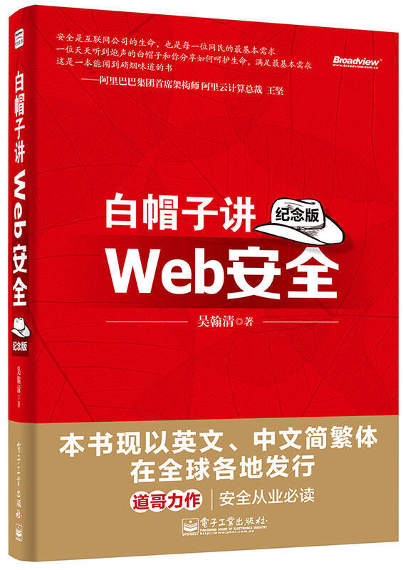
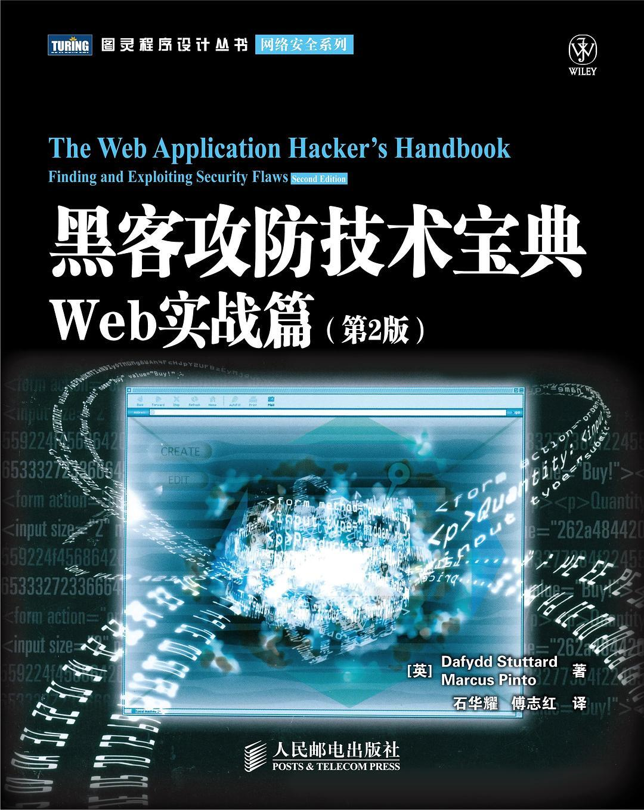
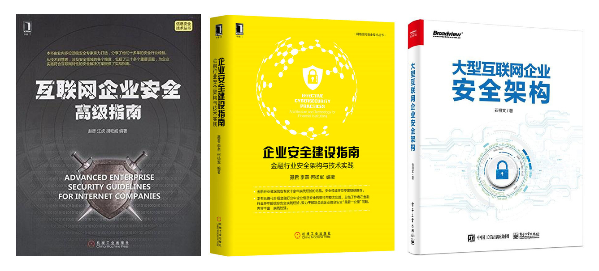
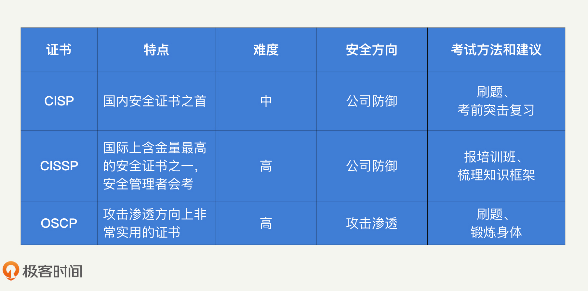

- 00 开篇词 别说你没被安全困扰过.md.html
- 01 安全的本质：数据被窃取后，你能意识到问题来源吗？.md.html
- 02 安全原则：我们应该如何上手解决安全问题？.md.html
- 03 密码学基础：如何让你的密码变得“不可见”？.md.html
- 04 身份认证：除了账号密码，我们还能怎么做身份认证？.md.html
- 05 访问控制：如何选取一个合适的数据保护方案？.md.html
- 06 XSS：当你“被发送”了一条微博时，到底发生了什么？.md.html
- 07 SQL注入：明明设置了强密码，为什么还会被别人登录？.md.html
- 08 CSRF_SSRF：为什么避免了XSS，还是“被发送”了一条微博？.md.html
- 09 反序列化漏洞：使用了编译型语言，为什么还是会被注入？.md.html
- 10 信息泄露：为什么黑客会知道你的代码逻辑？.md.html
- 11 插件漏洞：我的代码看起来很安全，为什么还会出现漏洞？.md.html
- 13 Linux系统安全：多人共用服务器，如何防止别人干“坏事”？.md.html
- 14 网络安全：和别人共用Wi-Fi时，你的信息会被窃取吗？.md.html
- 15 Docker安全：在虚拟的环境中，就不用考虑安全了吗？.md.html
- 16 数据库安全：数据库中的数据是如何被黑客拖取的？.md.html
- 17 分布式安全：上百个分布式节点，不会出现“内奸”吗？.md.html
- 18 安全标准和框架：怎样依“葫芦”画出好“瓢”？.md.html
- 19 防火墙：如何和黑客“划清界限”？.md.html
- 20 WAF：如何为漏洞百出的Web应用保驾护航？.md.html
- 21 IDS：当黑客绕过了防火墙，你该如何发现？.md.html
- 22 RASP：写规则写得烦了？尝试一下更底层的IDS.md.html
- 23 SIEM：一个人管理好几个安全工具，如何高效运营？.md.html
- 24 SDL：怎样才能写出更“安全”的代码？.md.html
- 25 业务安全体系：对比基础安全，业务安全有哪些不同？.md.html
- 26 产品安全方案：如何降低业务对黑灰产的诱惑？.md.html
- 27 风控系统：如何从海量业务数据中，挖掘黑灰产？.md.html
- 28 机器学习：如何教会机器识别黑灰产？.md.html
- 29 设备指纹：面对各种虚拟设备，如何进行对抗？.md.html
- 30 安全运营：“黑灰产”打了又来，如何正确处置？.md.html
- 加餐1 数据安全：如何防止内部员工泄露商业机密？.md.html
- 加餐2 前端安全：如何打造一个可信的前端环境？.md.html
- 加餐3 职业发展：应聘安全工程师，我需要注意什么？.md.html
- 加餐4 个人成长：学习安全，哪些资源我必须要知道？.md.html
- 加餐5 安全新技术：IoT、IPv6、区块链中的安全新问题.md.html
- 模块串讲（一）Web安全：如何评估用户数据和资产数据面临的威胁？.md.html
- 模块串讲（三）安全防御工具：如何选择和规划公司的安全防御体系？.md.html
- 模块串讲（二）Linux系统和应用安全：如何大范围提高平台安全性？.md.html
- 结束语 在与黑客的战役中，我们都是盟友！.md.html
- 捐赠
加餐4 个人成长：学习安全，哪些资源我必须要知道？
你好，我是何为舟。欢迎来到安全专栏的第四次加餐时间。
安全涉及的知识面非常广，更新速度也很快，前辈们很难有足够的时间和精力来言传身教。这个时候就需要我们具备良好的自学能力，通过持续的学习来掌握新的知识，应对新的变化和挑战。
优质的学习资源是自学的重要基础。今天，我就来盘点一下，对我个人的安全学习产生帮助的各类学习资源，以及不同阶段的安全人员应该如何对各类资源进行取舍。
安全入门书籍
安全的核心能力分为两个方向：攻击和防御。俗话说“未知攻焉知防”，所以，学习安全一定是从攻击手段入门，在掌握了一定的攻击基础之后，我们再考虑选择某一个方向深入学习。
所以，我建议刚入门的同学可以先选择几本攻击方向的经典书籍来学习。
《白帽子讲Web安全》这本书是大部分人的安全入门书籍。它覆盖了绝大部分的安全攻击知识，而且作者把知识点讲解得清晰，即使你没有安全基础也能很好理解。可以说，在学习完这本书之后，你已经具备了安全人员所需要的全部基础知识。

如果说《白帽子讲Web安全》是一本入门教程，那《黑客攻防技术宝典》就是一本攻击手册。虽然同样是讲Web安全攻防内容，但是《黑客攻防技术宝典》对其中涉及的每一个细节和原理（如HTTP协议，浏览器技术等）都进行了详细讲解。你在学习Web安全的过程中遇到的大部分问题，都可以通过翻阅这本书来解决。因此，我建议你通读这本书，并且结合实际工作中遇到的问题随时查阅。
- 熟练使用各种渗透测试工具是安全攻击的必备技能，Metasploit是最为常见的渗透测试工具之一。《Metasploit渗透测试指南》这本书是学习这款工具最经典的书籍之一，书中对如何利用Metasploit发起各类攻击测试进行了详细介绍。如果你想要快速掌握Metasploit的使用方式，这本书能够帮到你。
 -
学完这几本书，你不一定能发起一次真实的攻击。但当你面对任何一起攻击事件时，一定能知道它的原理是什么。这恰恰就是所有安全人员需要具备的基础能力。
-
学完这几本书，你不一定能发起一次真实的攻击。但当你面对任何一起攻击事件时，一定能知道它的原理是什么。这恰恰就是所有安全人员需要具备的基础能力。
攻击进阶练习
有了一定的攻击基础之后，如果你还想向攻击渗透方向深入钻研，那就不是任何一本书能够解决的了。这个时候实战训练能够帮助你快速成长。下面，我就来分享一些我觉得很实用的攻击渗透平台。
WebGoat是最权威的Web安全组织OWASP提供的一个Web安全练习平台，它几乎涵盖了全部的Web安全漏洞的讲解和练习内容。使用WebGoat有两大好处：首先，它是一个本地的平台。这意味着你可以随时查看网页的源码，甚至进行调试。因此，你可以清晰地了解一次攻击发生时，Web应用内部到底发生了什么；其次，其中的每一个练习内容都有对应的知识讲解。所以，这个平台对你明确攻击方向，进行安全入门训练是十分合适的。
Pwnable.kr是我体验过的免费的攻击渗透平台中最好用的一个。Pwnable.kr中的题目更偏向系统和应用层的攻击渗透（这些都是权限提升过程中的常见手段），适合用来进行攻击渗透的进阶训练。Pwnable.kr的好用之处就在于，它提供了一个可以直接访问的Linux系统环境，省去了你在本地搭建环境的繁琐过程。
但是Pwnable.kr有一个缺点，就是不提供任何解题思路和答案，不过，网上已经有很多人公开了平台上题目的解题思路，你可以用来参考。但是，我还是建议你至少花2-3天的时间去思考和解决一道题目，如果仍然得不到结果，再去参考别人的答案。
如果自我训练已经无法让你获得成就感了，那是时候去参加一些比赛了。目前，国内的XCTF联赛最为知名。你可以独自作战，也可以叫上几个朋友组团参赛。
通常来说，一场CTF比赛会进行48小时以上，如果你精力充沛的话，可以去体验一把挑战极限的快感。而且，比赛方通常会在赛后公开部分题目的解题思路，你也可以拿来作为学习的资源。通过不断参加比赛，你可以磨练自己的攻击技巧和能力。除此之外，如果获得了足够的积分和名次的话，也是证明你个人能力的一个有力证明。
当具备足够的攻击能力之后，你既可以成为安全渗透人员，为企业应用的安全贡献力量，也可以成为一名“白帽子”，专门去挖掘各个公司的安全漏洞，然后提交给对应的SRC，获取各类物质奖励。
企业防御书籍
如果你选择的是安全防御方向，你会逐步接触到公司的安全防御工作。那么在一开始，你一定要去学习各大公司的安全负责人的经验，看看他们的安全建设思路是怎么样的，以及有哪些“坑”需要注意。阅读他们的书籍，就是向大佬学习的一种最简单、快捷的方式。
有关企业安全的书，我读过比较好的有：赵彦的《互联网企业安全高级指南》、聂君的《企业安全建设指南》、石祖文的《大型互联网企业安全架构》。这些书中有很大部分内容是相似的，从任何一本书中，你都能够了解到企业安全体系建设所需要使用的工具。对我个人来说，书中最精华的部分是作者对安全体系建设的思考、对各类安全工具的理解。- 
这些书的相似内容很多，读起来也不会花太多时间，所以，我建议你将这些书都读一遍。而且，这些书籍中的防御体系建设经验，都是安全行业内鼎鼎有名的大佬们基于自身经验总结的。虽然你不可能完全照搬里面的安全建设方案，但你可以从中吸取经验教训，博取众家之长，然后设计出适合你们公司的最佳方案。
安全证书
除了书籍和练习平台，我还想和你分享一些比较有价值的安全证书。以我了解到的现状，这些证书对应聘安全工作不会有太大的帮助。但我认为，这些证书最大的意义就在于，它能够推动你对安全知识体系进行补充和整理。因为考证的过程也是你对学过的知识进行再次学习和思考的过程。
其次，尽管对职业发展可能并没有帮助，但不论是对内行还是外行来说，证书始终是证明你安全能力的一个有力标签。
下面，我就来分享三个我认为最有价值的证书。为了方便你对比，我把这三个证书的基本信息总结了一张表格。在此基础上，我会重点分析一下，这些证书分别给我们的安全职业发展带来的好处。你可以结合自己的情况，来选择是否考取这些证书。

CISP（Certified Information Security Professional ，注册信息安全专业认证）的考试普遍反馈难度不高。不过我认为既然主动去考证了，目标就绝不仅仅只是考试通过，而是以学习和自我提升为主要目的。在内容上，CISP整理得还是很完善的。而且CISP强制培训，在培训过程中，通过讲师的介绍，同样能够学习到不少理论和实践的内容。
在内容上，CISSP（Certification for Information System Security Professional，信息系统安全专业认证）会比CISP更丰富一些，不仅包含一些国际性的政策和框架，还包含诸如物理安全等更偏向运维的内容。另外CISSP不存在题库，它的初衷就是希望你不仅仅只是去背教材，而是能够自主梳理知识，并且深刻理解安全。因此，学习CISSP不仅能拓展你的知识面，还能帮助你进行自我总结和提升。
CISP和CISSP是更偏向公司防御的证书，而OSCP（Offensive Security Certified Professional，安全攻击专业认证）是专门针对攻击渗透的证书，最近也比较热门。如果你在自主训练时觉得缺乏明确的方向，其实可以尝试通过考取OSCP证书来获得指导。另外，CTF比赛竞争还是比较激烈，拿到名次也很难。因此，我认为可以将OSCP作为CTF之外的另一种选择，只要拿到了OSCP证书，同样能够证明你的攻击渗透能力达到了可以实际运用的水平。
安全资讯
最后，我还想推荐3个比较常用的资讯网站，FreeBuf、安全客和安全牛。这些网站每天会更新一些安全新闻和学习资料，你可以通过它们快速查询最新的行业动态。我个人一般是利用休闲时间，来阅读这类网站上的内容。我会先快速地浏览一下标题，找出一些感兴趣的内容进行了解。如果遇到某些特别感兴趣的知识点，想要深入挖掘，我会再搜索其他的相关资料来补充学习。
总结
我觉得无论跟随哪个课程进行学习，都不可能学完所有的安全知识。所以，在学习安全的路上，自学是我们不断精进的主要方式。
我的经验是：书籍能够帮助你入门，并且指导你进行防御建设；实战演练是掌握安全渗透技巧的唯一途径；安全证书一方面能帮助你对整体的安全知识进行全盘梳理，另一方面也是你个人安全能力的一个证明；安全资讯是帮助你掌握安全动态，发现新知识点的一个不错途径。
想要学好安全，没有什么捷径可以走，唯有多练多看。因此，对于安全的学习，我不建议你在前期花过多的时间去做基础知识储备，那容易变成纸上谈兵。我更建议的是，当有了一定安全基础之后，你要找机会尽快投入到实际的演练或者工作中。在实践的过程中，你再对遇到的困难或者知识盲区进行有针对性的学习。另外，在积累实际经验的过程中，周期性的自我总结，以及对知识进行系统梳理，也能很好地推动我们的个人成长。
思考题
最后，你可以在留言区讲一讲你的自学心得，分享一些你的学习资源。
如果有收获，欢迎你把文章分享给你的朋友。我们下一讲再见！
© 2019 - 2023 Liangliang Lee. Powered by gin and hexo-theme-book.